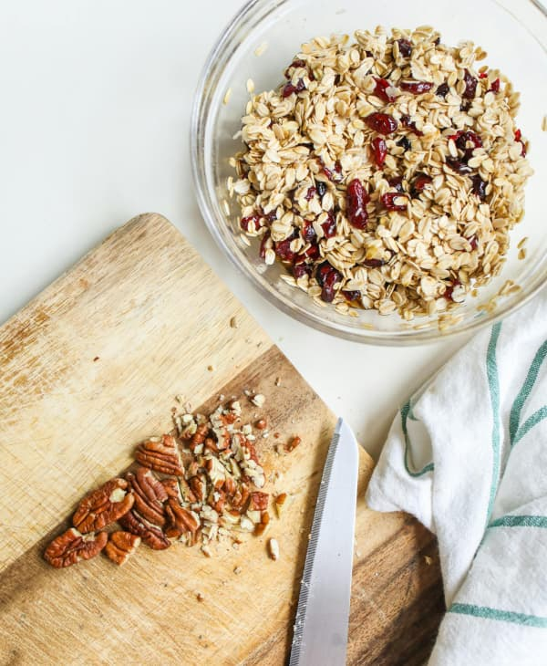
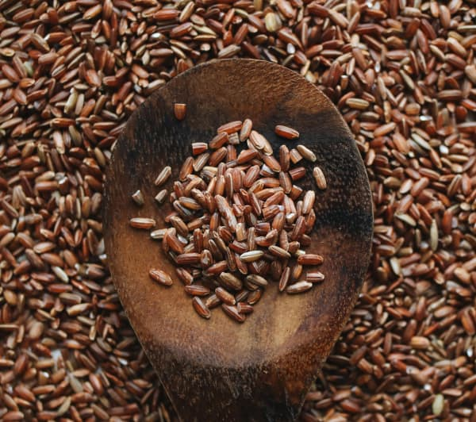

Grãos
Sementes de plantas cerealíferas.Grãos, como arroz, trigo, milho e cevada, formam a base da alimentação de muitas culturas ao redor do mundo, fornecendo uma fonte crucial de carboidratos, proteínas e outros nutrientes essenciais.
Existem variedades de grãos antigos que estão sendo redescobertas devido ao interesse crescente em alimentos tradicionais. Exemplos incluem o kamut, a espelta e a aveia não modificada.
Em média, muitos grãos levam de três a seis meses desde a semeadura até a colheita. Culturas como o trigo, o arroz e a cevada passam por diferentes fases de desenvolvimento, desde a germinação até a maturação completa do grão. Essa jornada agrícola requer paciência, cuidado e respeito pelas condições naturais.
Grãos, verdadeiros alicerces nutricionais, destacam-se como opções de baixo teor calórico, proporcionando não apenas saciedade essencial, mas também benefícios substanciais para a saúde. Em média, apresentam aproximadamente 80 a 120 calorias por 100 gramas, variando de acordo com o tipo específico.
“Seja como o grão que enfrenta o solo escuro e emerge como uma colheita dourada.”
- Categoria: Grãos
- Surgiu: 12.000 anos
- Cultivo: 60 - 150 dias
- Média calórica: 110 kcal
- Preço médio: R$ 6,70 Kg
Escolha um local adequado, ensolarado e prepare o solo com uma mistura balanceada de nutrientes para garantir um desenvolvimento saudável dos grãos. A seleção de variedades adaptadas ao clima local é crucial para o sucesso da colheita. Ao semear seus grãos, siga as orientações específicas para cada tipo, considerando a profundidade de plantio e os espaçamentos recomendados. Manter o solo adequadamente irrigado, ajustando a quantidade de água, é essencial para um crescimento robusto.